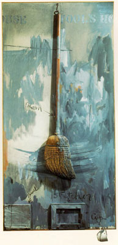

Ivan Puni:
Relief with Hammer, 1915
|
Robert Rauschenberg:
Pilgrim, 1960
|

Jasper Johns:
Fool's House, 1962
|
Joseph Kosuth:
One and Three Hammers, 1965
Joseph Kosuth:
One and Three Chairs, 1965
|
Ben Vautier:
Encore un fer de repasser
qui se prend pour de l'art.
|
Ben Vautier:
Du Neo Geo de Ben, 1986
|